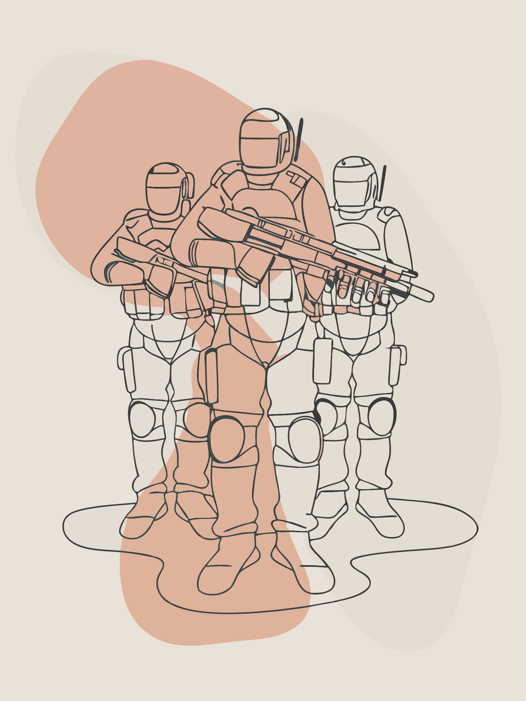

Главным водоразделом последних лет стала война в Украине, встряхнувшая практически все механизмы международной безопасности. Европейские столицы ускоренно перевооружаются: по данным SIPRI, оборонные заказы стран ЕС выросли в 2023 г. на 47 % к допандемийному уровню, а Германия за пять лет намерена перелить в Бундесвер исторические €100 млрд. Но нет и следа прежней иллюзии, что «континентальные войны» ушли в прошлое: Украина стала реальным полигоном для дронов-камикадзе, ПВО «сетевого поколения» и цифровой разведки, до этого существовавших в PowerPoint-брифингах.
Второй тектон — стратегическое соперничество США и Китая. С одной стороны, Вашингтон формирует «сдерживающий пояс» (AUKUS, QUAD, модернизация обороны Тайваня), с другой — Пекин запускает третий авианосец, строит гиперзвуковые системы и удваивает ядерную триаду к 2035 г., чтобы выйти на уровень «неуязвимого паритета».
Искусственный интеллект. Смена поколений уже видна: на учениях DARPA малые БПЛА с ИИ провели воздушный бой без оператора. В гражданских лабораториях разрабатывается «объяснимый ИИ», в оборонных — «туманный ИИ» (fog AI), способный принимать решения при потере связи. К 2030 г. доля «полностью автономных» платформ в арсеналах ведущих держав может превысить 30 %.
Космос. 2024-й стал годом, когда число спутников Starlink перешагнуло отметку 5000. Военные видят в этом источник сверхустойчивой связи, но и новую уязвимость: Россия и КНР тестируют кинетические перехватчики на высоте 300–500 км. Сценарий «orbital pearl harbour» уже обсуждается в Пентагоне.
Гиперзвук. Число стран, объявивших о гиперзвуковом оружии, выросло до семи; контрмеры запаздывают на 5–7 лет, что создаёт «стратегическое окно» — самый опасный этап любой гонки вооружений.
«10 минут до цели»: гиперзвук как новый фактор стратегической неожиданности
Дальность новейших планирующих блоков типа DF-ZF (КНР) и «Авангард» (РФ) превышает 3 000 км при скорости 6–10 Махов: время подлёта – 7–12 мин., что втрое быстрее классических БРСД. По расчётам RAND, сегодняшние системы ПРО способны перехватывать не более 15 % гиперзвуковых целей; окно уязвимости сохранится как минимум до 2031 г.
Пентагон отвечает программой Glide Phase Interceptor (бюджет $4,5 млрд), но даже в оптимистичном графике серийные поставки начнутся лишь в 2029 г. Стратеги называют период 2025–2030 «зоной повышенного искушения»: атакующая сторона может рассчитывать на «односторонний козырь», провоцируя гонку превентивного давления.
Мир дрейфует к фрагментированному порядку: региональные блоки («Большой Ближний Восток», «Индо-Тихоокеанский пояс», «Европа-Плюс») выстраивают локальные балансы. Больших войн удаётся избегать ценой всплеска прокси-конфликтов и нарастающей «серой зоны» киберударов. Вероятность – 45 %.
Отсутствие новых соглашений по ядерному и космическому оружию, обрыв диалога США–РФ после исчерпания New START-3 и отсутствие прозрачности в Китае приводят к эскалационной спирали. Уже к 2028 г. растёт риск «автономной ошибки» — инцидента с участием ИИ-систем ПВО или дронов. Вероятность – 30 %.
Из-за растущих издержек и серии опасных кризисов (например, гиперзвуковой удар по спутнику-носителю ядерного предупреждения) великие державы возвращаются к столу переговоров. Появляется «модульный контроль вооружений»: не всеобъемлющие договоры, а набор тематических правил — «цифровой протокол ИИ», «космический мораторий на высотах до 1000 км», «прозрачность гиперзвуковых испытаний». Вероятность – 25 %, но именно этот сценарий предоставляет наибольшие дивиденды безопасности.
Срок действия New START истекает в 2026 г., переговоры осложнены украинским фактором. Эксперты Carnegie Endowment предлагают «режим зеркального уведомления»: необязательные обмены телеметрией вместо классических инспекций. Параллельно в Женеве начала работу Группа правительственных экспертов ООН по автономному оружию; рубежом считается 2027 г., когда должно быть принято либо юридически обязывающее определение «человеческого контроля», либо гонка уйдёт в серую зону окончательно.
ЧВК 2.0: рынок вооружённых алгоритмов
«Group-4i», «Red Sky» (США), «Frontier Aegis» (ОАЭ) и «Синичка Pro» (РФ) предлагают «дрон-как-сервис»: полный цикл — от закупки БПЛА до эксплуатации и анализа боевых данных. Контрактный пакет ротного масштаба (60–80 беспилотников, наземная станция, ПВО малого радиуса) оценивается в $45–60 млн.
Страховые компании требуют для полигонных испытаний таких ЧВК уровня сертификации ISO/IEC 42001-AI (пилотный стандарт 2024 г.), что фактически приравнивает их к оборонным подрядчикам первого круга.
Прогноз Frost & Sullivan: к 2028 г. глобальный оборот «алгоритмических ЧВК» превысит $6,8 млрд, из них 40 % придётся на операции в «серой зоне» — охрану трубопроводов, киберпатрули портов и рудников, а также сопровождение гуманитарных миссий ООН.
Успех или провал переговоров США–КНР по «горячей линии» в космосе. Доля беспилотников в тактических ударных миссиях НАТО (цель – 35 % к 2030 г.): чем выше, тем глубже автоматизация конфликта. Расширение «зон безопасности» вокруг полупроводниковых фабрик на Тайване и в Южной Корее: если в стратегии США появится пункт о «военно-промышленном щите» над TSMC, риск военного столкновения возрастёт. Ритм пусков северокорейских МБР: каждый кластер из трёх и более испытаний в год — явный сигнал углубления ракетного обмена с Москвой или Пекином.
Orbital Pearl Harbor: насколько хрупки мега-созвездия спутников
На орбите LEO (>1 500 км) уже работает свыше 7 400 коммерческих аппаратов, из них 65 % — Starlink, OneWeb, Jilin-1.
Испытания АСАТ-оружия: РФ (2021) — высота 480 км; КНР (2007) — 860 км; США (2008) — 250 км. Все три продемонстрировали техническую готовность к «кинетическому захолустью».
По модели Aerospace Corp., одновременный вывод из строя 50–60 спутников навигации и связи может парализовать до 38 % глобального торгового флота и 17 % воздушного трафика в течение 72 часов.
Вашингтон и Токио продвигают идею «пространственной резервности»: дублирование критических сервисов сразу на трёх высотах (LEO, MEO, HEO) — вопрос включения её в новый договор по космосу вынесен на 2025 г.
Мировая военно-политическая система движется не столько к «новой холодной войне», сколько к периоду параллельных гонок, где центры силы соприкасаются в нескольких зонах сразу — от орбиты до глубин океана. Следующие десять лет решат, останется ли управляемым переход к многополярности или мы получим эпоху «горячих рывков» с риском цепного срыва автоматизированных систем. Выбор лежит не только в плоскости вооружений. Он требует политической воли к гибридным — гибким — соглашениям, которые будут успевать за темпом технологий. Иначе в середине 2030-х мир может проснуться в реальности, где «человеческий фактор» станет слабым звеном между двумя сверхскоростными алгоритмами. Задача дипломатов — не допустить, чтобы именно они нажали первую виртуальную «кнопку».